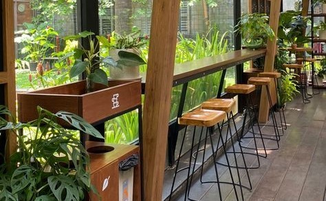
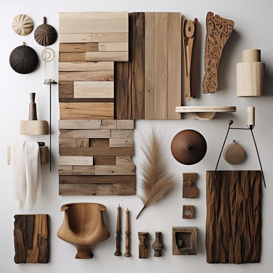
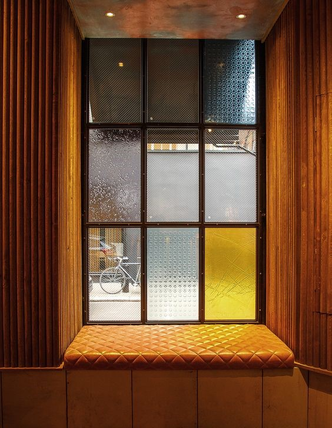
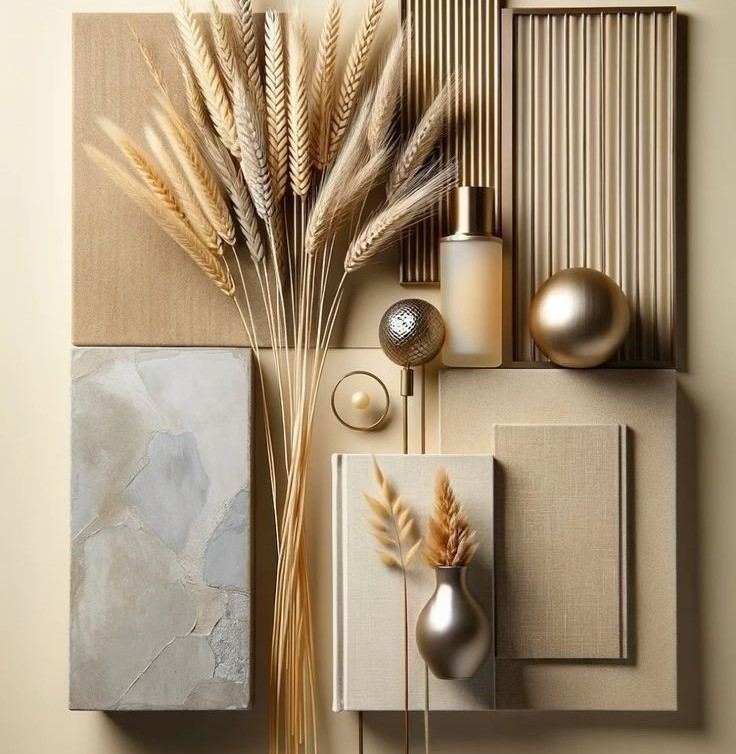

Textures
LUSTRE & GRACE
The interplay of rich wood textures, sleek metal finishes, and the light-enhancing properties of glass harmoniously combine to evoke a contemporary yet inviting ambiance.

Mix different materials such as wood, metal, and glass to create a visually dynamic space. For instance, a wooden coffee table with metal legs or a glass-top dining
table with wooden chairs can add depth and texture to your decor, creating a harmonious blend of materials.
  
- Guidance video only for you!
Discover fresh inspiration
—it's sure to ignite your creativity!